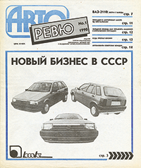
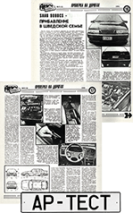
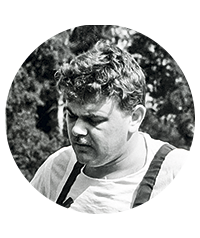
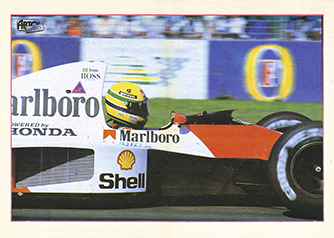

С протянутой ручкой: тест нового кроссовера Range Rover Velar на дорогах Норвегии

Он похож на гладкий отполированный камень с морского побережья - на фоне точеного Велара крупные Рейнджи стали выглядеть грузными, а недавно обновившийся Evoque потерял актуальность. Но быть лучшим Рейндж Ровером не сложно - а достаточно ли этого, чтобы стать лидером класса?
Он похож на гладкий отполированный камень с морского побережья - на фоне точеного Велара крупные Рейнджи стали выглядеть грузными, а недавно обновившийся Evoque потерял актуальность. Но быть лучшим Рейндж Ровером не сложно - а достаточно ли этого, чтобы стать лидером класса?
Он похож на гладкий отполированный камень с морского побережья - на фоне точеного Велара крупные Рейнджи стали выглядеть грузными, а недавно обновившийся Evoque потерял актуальность. Но быть лучшим Рейндж Ровером не сложно - а достаточно ли этого, чтобы стать лидером класса?
свайп
1990

Первый номер Авторевю
Среди авторов — Подорожанский, Диваков, Хрисанфов, Никольский, Шварцбург, к которым вскоре присоединился Рустам Акиниязов
1991

Первый АР-тест: Saab 9000 CS
1992

Сергей Воскресенский
1992

Цветные фото и постер на развороте
1994
Развод с ИД «Деловой мир
Он похож на гладкий отполированный камень с морского побережья - на фоне точеного Велара крупные Рейнджи стали выглядеть грузными, а недавно обновившийся Evoque потерял актуальность. Но быть лучшим Рейндж Ровером не сложно - а достаточно ли этого, чтобы стать лидером класса?
Он похож на гладкий отполированный камень с морского побережья - на фоне точеного Велара крупные Рейнджи стали выглядеть грузными, а недавно обновившийся Evoque потерял актуальность. Но быть лучшим Рейндж Ровером не сложно - а достаточно ли этого, чтобы стать лидером класса?
Он похож на гладкий отполированный камень с морского побережья - на фоне точеного Велара крупные Рейнджи стали выглядеть грузными, а недавно обновившийся Evoque потерял актуальность. Но быть лучшим Рейндж Ровером не сложно - а достаточно ли этого, чтобы стать лидером класса?
Дмитрий Струков
Обозреватель Авторевю
Рост:185 см
Водительский стаж:58 лет
Ездит на автомобиле
LADA Vesta SW Cross, BMW X5, Ford Focus, ВАЗ 21043, Волга 3110, Газель Next, Какое-то длинное название машины
И все равно: мне, черт подери, приятно быть Volvo-драйвером! По крайней мере, если это новый XC60. А чуть ли не все автопилотные системы можно если не отключить, то хотя бы заткнуть им рот. Или не заказывать.
Он похож на гладкий отполированный камень с морского побережья - на фоне точеного Велара крупные Рейнджи стали выглядеть грузными, а недавно обновившийся Evoque потерял актуальность. Но быть лучшим Рейндж Ровером не сложно - а достаточно ли этого, чтобы стать лидером класса?
Неприятных моментов было два. Видеокамера, которая лежала рядом на переднем сиденье, улетела вперед и грохнулась так, что съемка могла закончиться, не успев начаться. Перед стоящим на светофоре Фиатиком сработала система автоматического торможения (экстренного!), хотя в мои планы вовсе не входило проталкивать малышку за стоп-линию. Камера выжила. Вторую нештатную ситуацию спровоцировала навигация, будто разомлевшая под испанским солнцем. Очередная запоздавшая подсказка напомнила женушку в роли штурмана: Надо было уходить с автобана направо! Я еще успевал, но проворонил идущий справа автомобиль - и, услышав его истошный сигнал, метнулся влево. По идее, должна была сработать система оповещения об опасности в слепых зонах, которая на новом Volvo XC60 дополнена функцией отруливания. Тоже расслабилась?
Заголовок Н2
- И все равно: мне, черт подери, приятно быть Volvo-драйвером! По крайней мере, если это новый XC60. А чуть ли не все автопилотные системы можно если не отключить, то хотя бы заткнуть им рот. Или не заказывать.
- И все равно: мне, черт подери, приятно быть Volvo-драйвером! По крайней мере, если это новый XC60. А чуть ли не все автопилотные системы можно если не отключить, то хотя бы заткнуть им рот. Или не заказывать.
- И все равно: мне, черт подери, приятно быть Volvo-драйвером! По крайней мере, если это новый XC60. А чуть ли не все автопилотные системы можно если не отключить, то хотя бы заткнуть им рот. Или не заказывать.
- И все равно: мне, черт подери, приятно быть Volvo-драйвером! По крайней мере, если это новый XC60. А чуть ли не все автопилотные системы можно если не отключить, то хотя бы заткнуть им рот. Или не заказывать.
- И все равно: мне, черт подери, приятно быть Volvo-драйвером! По крайней мере, если это новый XC60. А чуть ли не все автопилотные системы можно если не отключить, то хотя бы заткнуть им рот. Или не заказывать.
Он похож на гладкий отполированный камень с морского побережья - на фоне точеного Велара крупные Рейнджи стали выглядеть грузными, а недавно обновившийся Evoque потерял актуальность. Но быть лучшим Рейндж Ровером не сложно - а достаточно ли этого, чтобы стать лидером класса?
Заголовок Н3
- И все равно: мне, черт подери, приятно быть Volvo-драйвером! По крайней мере, если это новый XC60. А чуть ли не все автопилотные системы можно если не отключить, то хотя бы заткнуть им рот. Или не заказывать.
- И все равно: мне, черт подери, приятно быть Volvo-драйвером! По крайней мере, если это новый XC60. А чуть ли не все автопилотные системы можно если не отключить, то хотя бы заткнуть им рот. Или не заказывать.
- И все равно: мне, черт подери, приятно быть Volvo-драйвером! По крайней мере, если это новый XC60. А чуть ли не все автопилотные системы можно если не отключить, то хотя бы заткнуть им рот. Или не заказывать.
- И все равно: мне, черт подери, приятно быть Volvo-драйвером! По крайней мере, если это новый XC60. А чуть ли не все автопилотные системы можно если не отключить, то хотя бы заткнуть им рот. Или не заказывать.
- И все равно: мне, черт подери, приятно быть Volvo-драйвером! По крайней мере, если это новый XC60. А чуть ли не все автопилотные системы можно если не отключить, то хотя бы заткнуть им рот. Или не заказывать.
| Летние шины, побеждавшие в сравнительных тестах Авторевю |
|---|
| Год | Модель | Размерность |
| 1994 | НИИШП И-392* | 175/70 R14 |
| 1994 | Monarch M6* | 185/60 R14 |
| 1994 | Goodyear Aquatred* | 185/70 R14 |
| 1995 | НИИШП И-339* | 195/70 R15 |
| 1996 | Barum Brillant OR57 | 175/70 R13 |
| 1997 | Michelin Energy MXT | 175/70 R13 |
| 1997 | VS-6 (Волтайр) | 195/65 R15 |
| 1998 | Michelin Energy XT2 | 185/65 R14 |
| 1998 | Michelin 4x4 Polyvalent XPC | 235/75 R15 |
| 1999 | Goodyear Eagle Ventura | 195/60 R15 |
| 1999 | VS-13 (Волтайр) | 175/70 R13 |
| 2000 | Michelin Pilot Exalto | 195/65 R15 |
| 2000 | Uniroyal Rallye 540 | 195/65 R15 |
| 2001 | Bridgestone B330 | 195/65 R15 |
| 2002 | Pirelli P6 | 195/65 R15 |
| 2003 | Continental ContiPremiumContact | 185/65 R15 |
| 2003 | Goodyear Eagle Ventura | 185/65 R15 |
| 2004 | Continental ContiPremiumContact | 185/65 R15 |
| 2004 | Nokian NRHi | 185/65 R15 |
| 2004 | Nokian NRVi | 215/65 R16 |
| 2005 | Goodyear Eagle F1 GS-D3 | 225/45 R17 |
| 2005 | Kama Euro-224 | 175/70 R13 |
| 2005 | К-186 Баргузин-4 | 175/70 R13 |
| 2005 | Continental ContiPremiumContact 2 | 205/55 R16 |
| 2006 | Vredestein Hi-Trac | 205/55 R16 |
| 2007 | Michelin Pilot Exalto | 205/55 R16 |
| 2007 | Continental ContiEcoContact 3 | 175/65 R14 |
| 2008 | Bridgestone Turanza ER300 | 205/55 R16 |
| 2008 | Continental ContiPremiumContact 2 | 205/55 R16 |
| 2008 | Nokian Hakka H | 205/55 R16 |
| 2008 | Continental ContiSportContact 3 | 245/40 R18 |
| 2009 | Continental ContiPremiumContact 2 | 205/55 R16 |
| 2010 | Nokian Hakka H | 205/55 R16 |
| 2010 | K-156-1 Hива 4x4 | 185/75 R16 |
| 2011 | Continental ContiSportContact 5P | 235/35 R19 |
| 2011 | Continental ContiPremiumContact 2 | 205/55 R16 |
| 2012 | Michelin Energy Saver | 185/60 R15 |
| 2012 | Hankook Ventus Prime² | 205/55 R16 |
| 2012 | Nokian Hakka Blue | 205/55 R16 |
| 2012 | Pirelli Cinturato P7 | 205/55 R16 |
| 2013 | Continental ContiCrossContact LX | 215/65 R16 |
| 2013 | Pirelli Scorpion Verde | 215/65 R16 |
| 2013 | Goodyear Eagle F1 Asymmetric 2 | 225/45 R17 |
| 2013 | Continental ContiSportContact 5 SUV | 255/55 R18 |
| 2014 | Continental ContiPremiumContact 5 | 205/55 R16 |
| 2014 | Continental ContiSportContact 5P | 255/40 R19
и 285/35 R19 |
| 2014 | Michelin Pilot Super Sport | 255/40 R19
и 285/35 R19 |
| 2015 | Continental ContiSportContact 5 | 225/45 R17 |
| 2015 | Yokohama Geolandar M/T+ | 265/75 R16 |
| 2016 | Hankook Kinergy Eco K425 | 185/65 R15 |
| 2016 | Goodyear EfficientGrip SUV | 215/65 R16 |
| 2017 | Michelin Pilot Sport 4S | 235/35 R19 |
| 2018 | Nokian Hakka Green 2 | 195/65 R15 |
| 2018 | Michelin Pilot Sport 4 | 225/45 R17 |
| 2019 | Continental PremiumContact 6 | 215/65 R17 |
| 2019 | Nokian Hakka Blue 2 SUV | 215/65 R17 |
| * Без итогового рейтинга, на основании рекомендаций |
Угол «ревю». Как менялся дизайн Авторевю за последние 30 лет, и почему логотип первого номера был синим, а не красным
Угол «ревю». Как менялся дизайн Авторевю за последние 30 лет, и почему логотип первого номера был синим, а не красным
Угол «ревю». Как менялся дизайн Авторевю за последние 30 лет, и почему логотип первого номера был синим, а не красным
Угол «ревю». Как менялся дизайн Авторевю за последние 30 лет, и почему логотип первого номера был синим, а не красным
Угол «ревю». Как менялся дизайн Авторевю за последние 30 лет, и почему логотип первого номера был синим, а не красным
Угол «ревю». Как менялся дизайн Авторевю за последние 30 лет, и почему логотип первого номера был синим, а не красным
{kind=link}